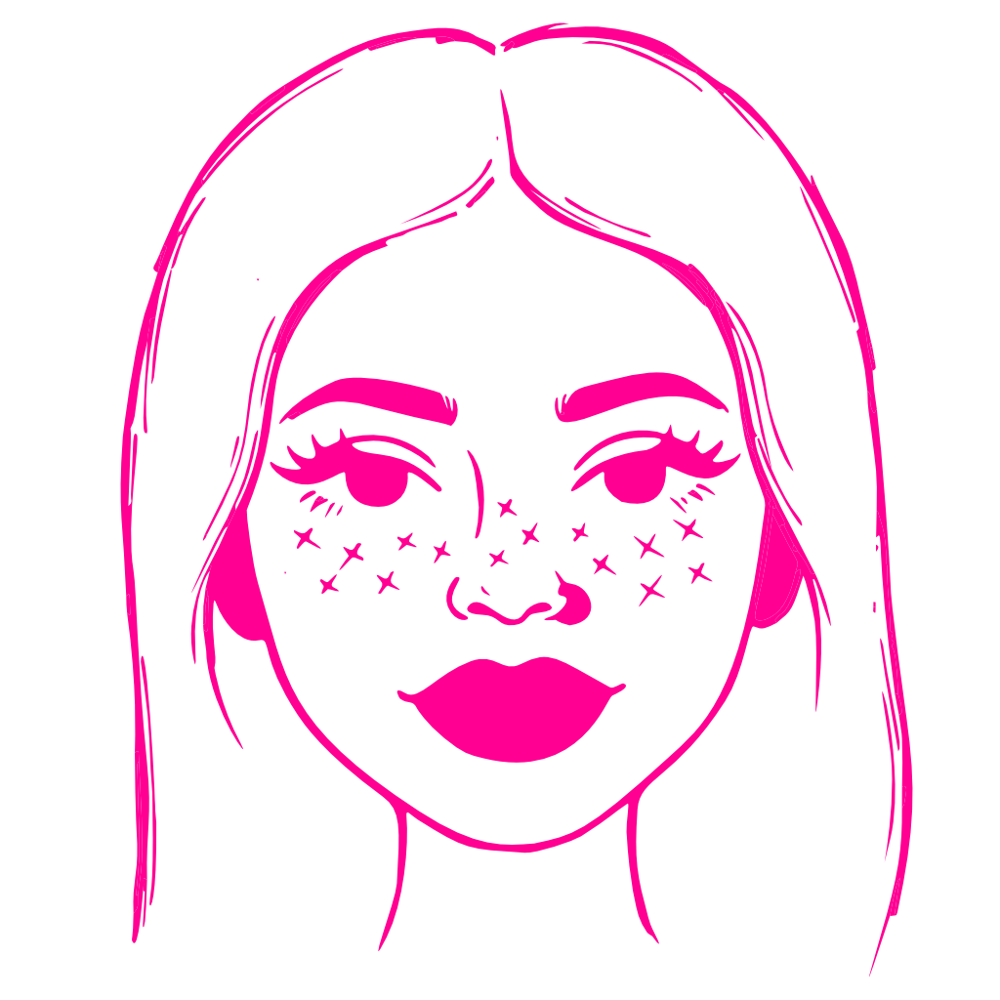

Soy estudiante de cuarto año de Diseño Industrial, últimamente obsesionada con la tecnología y cómo interactuamos con ella. El diseño de interacción es mi alter ego, es donde todo cobra sentido.
Herramientas que uso:
Contáctame
Si estás trabajando en algo o tienes una idea en mente, feliz de conversar. ;)